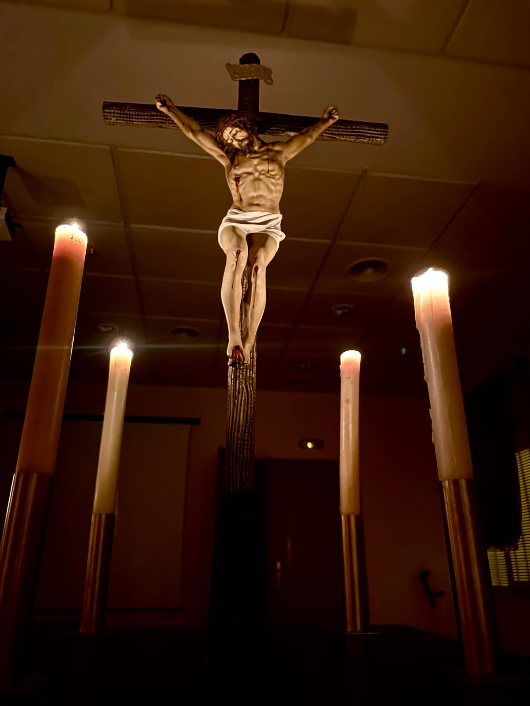

Cristo Crucificado
El Cristo Crucificado es la primera imagen que ha procesionado en la Semana Santa de La Ñora.
Realizado en la Escuela de Olot de los años 50.
Posee un estandarte Infantil que procesiona con él en Jueves Santo
Salió por primera vez el Jueves Santo de 2014 junto al titular de la Hermandad del Silencio.
El trono es portado por 8 niños con un máximo de 12 niños.
